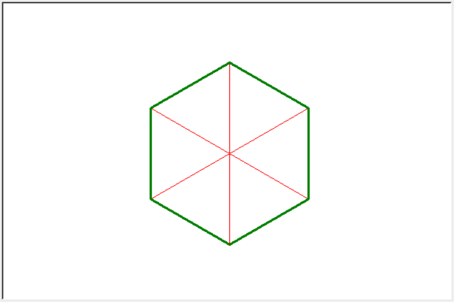

第07讲 绘制正多边形（二)
内容
第07讲 绘制正多边形（二)¶
Lecture07 Draw Regular Polygons（Part 2)
Assignments 作业¶
[1]:
from random import randint
from turtle import setup, reset, bye, pu, pd, bk, fd, left, right, st, ht
# from turtle import penup, pendown, backward, forward, showturtle, hideturtle
from turtle import pencolor, pensize
setup(600, 400, None, None)
使用已经教学过的知识，绘制如下图类似的正八边形。具体要求如下：
它一个边为120的正八边形，左右居中位于绘图区，每条边的线宽总是3，颜色是绿色；
它最下方不是一条边而是一个顶点
正八边形每一个顶点都朝向中心延伸出一条线宽为1颜色为红色的长度与八边形边长相等的线段
给每一行代码添加注释
[48]:
n = 8
side, degree = 120, 360/8
reset()
pu()
right(90)
fd(side+20)
left(90 + degree/2)
pd()
i = 0
while i < n:
pensize(3)
pencolor("green")
fd(side)
left(degree + (180 - degree)/2)
pensize(1)
pencolor("red")
fd(side)
bk(side)
right((180 - degree)/2)
i += 1
ht()
使用已经教学过的知识，编程绘制出下图所示的图形。具体要求如下：
它一个边为120的正六边形，仍然在绘图区左右居中，每条边的线宽总是3，颜色是绿色；
它最下方不是一条边而是一个顶点
正六边形中距离最远的3对顶点是用颜色为红色的宽为1的线条连接起来的
给每一行代码添加注释

[50]:
n = 6
side, degree = 120, 360/6
reset()
pu()
right(90)
fd(side)
left(90+degree/2)
pd()
i = 0
while i < n:
pensize(3)
pencolor("green")
fd(side)
left(degree + (180 - degree)/2)
pensize(1)
pencolor("red")
fd(side)
bk(side)
right((180 - degree)/2)
i += 1
ht()
使用已经教学过的知识，编程绘制出下图所示的图形。具体要求如下：
它一个边为120的正五边形，仍然在绘图区左右居中，每条边的线宽总是3，颜色是绿色；
它最上方是正五边形的一个顶点，且这个顶点距离绘图区中心（海龟一开始的位置）的距离等于正五边形的边长；
每一个顶点都朝向中心延伸出一条线宽为1颜色为红色的长度与边长相等的线段
给每一行代码添加注释

[2]:
n = 5
side, degree = 160, 360/n
reset()
pu()
left(90)
fd(side)
left(90+degree/2)
pd()
i = 0
while i < n:
pensize(3)
pencolor("green")
fd(side)
left(degree + (180 - degree)/2)
pensize(1)
pencolor("red")
fd(side)
bk(side)
right((180 - degree)/2)
i += 1
ht()
使用
while循环绘制下图。要求：给每一行代码添加你的注释

[3]:
reset()
side_length, degree = 20, 90
spacing = 20
i, repeat_times = 0, 10
while i < repeat_times:
fd(side_length)
left(degree)
fd(side_length)
left(degree)
side_length += spacing
i += 1
[4]:
ht()
使用
while循环绘制下图。要求：所有的三个正方形都完全位于尺寸为600×400的绘图区域的中心（包括左右和上下都是居中）
三个正方形的边长依次为250，150，和50
三个正方形的线宽一次为3, 2, 1
可以只使用一个
while循环来实现，也可以使用两个while循环嵌套来实现使用了两个
while循环并且代码总行数控制在35行以内（import, setup所在的行不计入总行数），结果正确可以获得额外的10分加分给每一行代码添加你的注释
[79]:
square_drawn, square_total = 0, 3 # 已经绘制好的正方形和一共要绘制的正方形数量
side_length, line_size = None, None # 正方形的边长的线宽
min_side_length = 50 # 最小的正方形的边长
side_total = 4 # 绘制的是正四边形
degree, spacing = 360/side_total, 50 # 正方形每次转动的角度，正方形之间的间隙
reset()
pu()
bk(min_side_length/2) # 移动海龟直至其位于要绘制的最内部的正方形的左下角
right(90)
fd(min_side_length/2) # 海龟此时朝向正下方
while square_drawn < square_total: # 根据已经绘制的正方形数量判断是否需要继续绘制
pd()
side_length = min_side_length + square_drawn * spacing * 2
# 根据当前正方形来确定边长
line_size = square_drawn + 1 # 根据当前正方形来确定线宽
pensize(line_size) # 选取线宽
side_drawn = 0 # 在绘制当前正方形时，已经绘制了的边的数量和总边数
while side_drawn < side_total: # 根据已经绘制的边数判断是否需要继续绘制边
left(degree) # 海龟左转，依次朝向正右、上、左、下
fd(side_length) # 前进绘制边长
side_drawn += 1 # 更新绘制好的边的数量
square_drawn += 1 # 更新绘制好的正方形的数量（又一个正方形画好了）
pu() # 抬起画笔准备移动到下一个正方形的左下角
fd(spacing) # 朝下方前进
left(90) # 左转朝右
bk(spacing) # 后退
right(90) # 右转朝下（恢复到朝下的状态，特别重要）
ht()